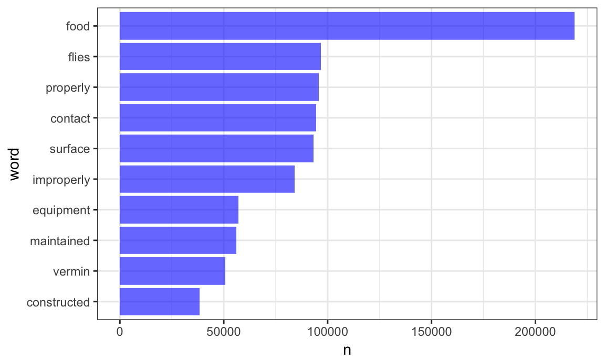

A bit of a digression for a DS class in a Biostat department, but it’s fun, easily related to web data, and deals with strings and factors.
This is the third module in the Data Wrangling II topic; the relevant slack channel is here.
https://cran.r-project.org/web/packages/viridis/vignettes/intro-to-viridis.html
library(tidyverse)
## Loading tidyverse: ggplot2
## Loading tidyverse: tibble
## Loading tidyverse: tidyr
## Loading tidyverse: readr
## Loading tidyverse: purrr
## Loading tidyverse: dplyr
## Conflicts with tidy packages ----------------------------------------------
## filter(): dplyr, stats
## lag(): dplyr, stats
library(tidytext)
## Warning: package 'tidytext' was built under R version 3.4.2
library(stringr)
library(forcats)
library(viridis)
## Loading required package: viridisLitenyc_inspections = read_csv("./data/DOHMH_New_York_City_Restaurant_Inspection_Results.csv.gz",
col_types = cols(building = col_character()),
na = c("NA", "N/A")) %>%
filter(grade %in% c("A", "B", "C")) %>%
mutate(inspection_num = row_number(),
boro = str_to_title(boro)) %>%
select(inspection_num, boro, grade, score, critical_flag, dba, cuisine_description, zipcode, violation_description)data(stop_words)restaurant_words = nyc_inspections %>%
unnest_tokens(word, violation_description) %>%
anti_join(stop_words, by = "word")word_counts = restaurant_words %>% count(word, sort = TRUE)
word_counts %>%
top_n(10) %>%
mutate(word = fct_reorder(word, n)) %>%
ggplot(aes(x = word, y = n)) +
geom_bar(stat = "identity", fill = "#009E73") +
coord_flip()
## Selecting by n
Finally, let’s compare which words are more likely to come from a “C” versus “A” inspection. We limit to words that appear at least 3 times, and compute the log odds ratio for each word, for the odds of the word appearing in a “C” inspection to the odds of the word appearing in an “A” inspection.
word_ratios <- restaurant_words %>%
filter(grade %in% c("A", "C")) %>%
count(word, grade) %>%
group_by(word) %>%
filter(sum(n) >= 5) %>%
ungroup() %>%
spread(grade, n, fill = 0) %>%
mutate_if(is.numeric, funs((. + 1) / sum(. + 1))) %>%
mutate(logratio = log(C / A)) %>%
arrange(desc(logratio)) We plot the top 15 most distinct words that are more common for “C” and “A” graded inspections.
word_ratios %>%
group_by(logratio < 0) %>%
top_n(15, abs(logratio)) %>%
ungroup() %>%
mutate(word = reorder(word, logratio)) %>%
ggplot(aes(word, logratio, fill = logratio < 0)) +
geom_col() +
coord_flip() +
ylab("log odds ratio (C/A)") +
scale_fill_discrete(name = "", labels = c("C", "A"))Now lets score the sentiment in each word. Note that only words that are in the selected sentiment lexicon will be retained, as the rest of the words are not considered meaningful. Let’s start with the sentiment lexicon “bing”, which simply categorizes each word as having a positive or negative sentiment. Then we’ll count the number of positive and negative words in each violation description, and create a score that represents the difference in the number of positive words minus the number of negative words.
bing_sentiments = get_sentiments("bing")Not perfect (e.g. this scores cold as negative which might not be accurate), but we’ll use it.
restaurant_word_sentiments = restaurant_words %>%
inner_join(., bing_sentiments) %>%
count(inspection_num, sentiment) %>%
spread(sentiment, n, fill = 0) %>%
mutate(sentiment = positive - negative) %>%
select(inspection_num, sentiment)
## Joining, by = "word"inspection_sentiments =
right_join(nyc_inspections, restaurant_word_sentiments,
by = "inspection_num")
inspection_sentiments %>%
filter(sentiment < -5) %>%
select(violation_description) %>%
print(n = 2)
## # A tibble: 8,071 x 1
## violation_description
## <chr>
## 1 "Filth flies or food/refuse/sewage-associated (FRSA) flies present in facil
## 2 "Filth flies or food/refuse/sewage-associated (FRSA) flies present in facil
## # ... with 8,069 more rowsinspection_sentiments %>%
filter(boro == "Manhattan") %>%
mutate(inspection_num = factor(inspection_num),
inspection_num = fct_reorder(inspection_num, sentiment)) %>%
ggplot(aes(x = inspection_num,
y = sentiment, fill = grade, color = grade)) +
geom_bar(stat = "identity") +
theme(axis.title.x = element_blank(),
axis.text.x = element_blank(),
axis.ticks.x = element_blank()) +
scale_fill_viridis(discrete = TRUE) +
scale_color_viridis(discrete = TRUE) The code that I produced working examples in lecture is here.